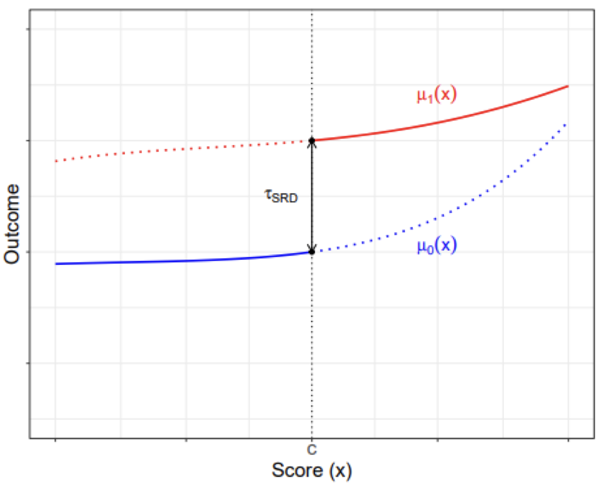

Theoretical Causal Inference
So far, we have introduced multiple estimators to help estimate parameters that describe the relationships between variables.
In this chapter, our goal is to go from relationships/correlation to causation. First, we introduce the popular causal frameworks and causal estimands. Then, we discuss the issue with selection bias, and why correlation is not causation. Finally, we discuss ways to identify the treatment effects and overcome selection bias.
Potential Outcomes Framework
A lot of social science and science is about understanding the causes of things. This involves understanding how some treatment variable \(D\) causes some outcome variable \(Y\). We call our treatment variable \(D\). For each unit \(t\), they have a treatment status of \(D_t\):
\[ D_t = \begin{cases} 1 & \text{if unit t received the treatment} \\ 0 & \text{if unit t did not receive the treatment} \end{cases} \]
Now, imagine that there are two parallel worlds. In one of these parallel worlds, unit \(t\) receives the treatment \(D_t = 1\). In the other parallel world, unit \(t\) does not receive the treatment \(D_t = 0\). Everything about these two parallel worlds besides \(D_i\) is identical. The outcome \(Y\) value in these two worlds is called the potential outcomes.
Definition 5.1 (Potential Outcomes) The potential outcomes \(Y_t(d)\) for unit \(t\) are the \(Y\) values in the two identical parallel worlds besides the \(D_t\) value.
\[ Y_t^{(d)} = \begin{cases} \pt & D_t = 1\text{ parallel world outcome Y value for unit t} \\ \pc & D_t = 0\text{ parallel world outcome Y value for unit t} \\ \end{cases} \]
To make clear when talking about potential outcomes, I will always highlight them in purple.
The above mentioned potential outcomes framework depends on the stablue unit treatment value assumption (SUTVA).
It basically says that unit \(t\)’s potential outcomes \(Y_t(1)\) and \(Y_{t}(0)\) are not affected in any way by another unit \(j\)’s treatment status \(D_j\). Basically, changing other individual’s treatment status has no effect on an individual’s own outcomes.
If SUTVA is violated, then our nice two parallel worlds example no longer is accurate. This is because if SUTVA is violated, unit \(t\) now has the potential outcomes of themselves receiving \(D_t = 1, 0\), but also other people \(D_j = 0, 1\). This will make the number of outcomes grow massively (especially if multiply other units affect an individual).
Common causes of SUTVA violations include:
- Spill-over effects: If we are testing a new curriculum, one student \(j\) getting the new curriculum may teach their friend \(t\) the new curriculum, which means if student \(j\) got or did not get the new curriculum would affect student \(t\)’s outcomes.
- Dilution: For example, in vaccines, there is herd immunity. That means other people getting the vaccines also improves my health outcomes.
If we know the two hypothetical parallel worlds are identical to each other except for treatment \(D_t\), then we know any difference in \(Y\) outcomes between the two worlds must be a result of treatment \(D\). This introduces us to the causal estimands - the true causal effects in the population:
Definition 5.2 (Individual Treatment Effect) The individual treatment effect of treatment \(D\) on \(Y\), for a specific unit \(i\), is given by the difference between the potential outcomes.
\[ \tau_t = \pt - \pc \]
Definition 5.3 (Average Treatment Effect) The ATE is the average individual treatment effects \(\tau_i\) in the population.
\[ \tau_{ATE} = \E(\tau_t) \ = \ \E(\pt - \pc) \ = \ \E \pt - \E \pc \]
Definition 5.4 (Average Treatment Effect on the Treated) The ATT is the average individual treatment effect \(\tau_i\) for only units that were assigned to the treatment group \(D_i = 1\):
\[ \tau_{ATT} = \E(\tau_t | D_t = 1) \ = \ \E(\pt - \pc | D_t = 1) \]
Definition 5.5 (Average Treatment Effect on the Untreated) The ATU is the average individual treatment effect \(\tau_i\) for only units that were assigned to the control group \(D_i = 0\):
\[ \tau_{ATT} = \E(\tau_t | D_t = 0) \ = \ \E(\pt - \pc | D_t = 0) \]
Definition 5.6 (Conditional Average Treatment Effect) The CATE is the average treatment effect, conditional on some other characteristic/covariate \(X\) value:
\[ \tau_{CATE}(x) = \E(\tau_t| X = x) \ = \ \E(\pt - \pc|X=x) \]
This estimand is also sometimes called the local average treatment effect (LATE).
However, there is an issue: in the real world, we obviously do not have two hypothetical parallel worlds. We only have one world - either unit \(t\) gets treated \(D_t = 1\) or unit \(t\) does not get treated \(D_t = 0\). The world we actually live in is called the observed outcome, and the parallel world we do not see is called the counterfactual. The fact we cannot observe the counterfactual is called the fundamental problem of causal inference.
Definition 5.7 (Observed Outcomes and Counterfactuals) The observed outcome \(Y_t\) that we actually see for a unit \(t\) can be given by a function of potential outcomes:
\[ Y_t = D_t \cdot \pt + (1-D_i) \cdot \pc \]
If we plug in the treatment status \(D_t = 0, 1\) of unit \(t\) into the above equation, we get observed outcomes
\[ Y_t = \begin{cases} \pt & \text{if} D_i = 1 \\ \pc & \text{if} D_i = 0 \end{cases} \]
The potential outcome that is not observed is the counterfactual outcome.
Structural Causal Models
An alternative causal framework, pioneered by Pearl, is called the structural causal models. This framework uses graphical models (called directed acyclic graphs) to illustrate causality.
Every causal graph illustrates how different variables are connected to each other. Each graph contains:
- Nodes: These are letters that represent different variables.
- Directed Edges: these are arrows that encode causal theories between the variables. For example, if you believe \(Z\) causes \(D\), you would draw an arrow \(Z \rightarrow D\). These connections are either observable (solid lines) or unobservable (dashed lines).
Paths are any route between any two variables, that do not have to follow the direction of the arrows. For example, in the figure above, between \(D\) and \(Y\), there are 3 paths:
- The direct path \(D \rightarrow Y\).
- The inderect/backdoor path \(D \leftarrow Q \rightarrow Y\).
- The indirect/backdoor path \(D \leftarrow Z \leftarrow W \rightarrow Y\).
The goal in causal inference is to get rid of all the indirect/backdoor paths, allowing us to isolate the direct relationship between \(D\) and \(Y\). There are two ways to isolate the direct relationship: external intervention and blocking paths.
One way to isolate a causal path is through an external intervention. For example, in the figure below, variable \(D\) is directly caused by \(Q\) and \(Z\). This allows indirect paths between \(D\) and \(Y\) to flow between \(Q\) and \(Z\).
However, by externally determining \(D\) (represented with the operator \(d_0\)), we can break the paths \(Q \rightarrow D\) and \(Z \rightarrow D\). This is because if we are deciding who gets \(D\) (such as by randomisation), that means we are deciding \(D\), not \(Q\) or \(Z\). This will allow us to block backdoor paths, and our new diagram will be:
And thus, we have isolated the causal relationship.
On the other hand, we can block indirect/backdoor paths through conditioning on a set of variables/nodes \(\set X\). A set of nodes \(\cal X\) blocks a path if one of two is true:
- A path is blocked if our set of conditioning nodes \(\set X\) includes at least one arrow-emitting node within that path.
- A path is blocked if the path contains a collision node (where multiple arrows point into it), and that collision node is not included in our set of conditioning nodes \(\set X\).
For example, in the figure above, we can see:
- The path \(D \rightarrow P \rightarrow Y\) is blocked by a set \(\set X = \{P\}\), since \(P\) is one arrow emitting node within this path.
- The path \(D \leftarrow M \rightarrow Y\) is blocked by a set \(\set X = \{M\}\), because \(M\) is one arrow emitting node within this path.
- The path \(D \leftarrow Z \rightarrow M \rightarrow Y\) is blocked by either \(\set X = \{M\}, \{Z\}\) or \(\{M, Z\}\).
- The path \(D \leftarrow Z \rightarrow M \leftarrow Q \rightarrow Y\) is blocked by an empty set \(\set X = \varnothing\), because \(M\) is a collider node in this path and we do not need to include it.
We will discuss the idea of blocking paths more in the next chapter.
Selection Bias
You always here the saying - correlation is not causation. But what does that actually mean? A simple model of correlation \(\rho\) is finding how observed \(Y\) changes when \(D\) changes. More specifically, we want to find the differences in conditional expectations (given by definition 1.8) of observed \(Y_t\) values for when \(D_t = 1\) and \(D_t = 0\):
\[ \rho_{D, Y} = \E(Y_t|D_t = 1) - \E (Y_t | D_t = 0) \]Now, let us do some algebra. First, we know that \(Y_t|D_t = 1\) is the observed potential outcome \(\pt\). We also know that \(Y_t|D_t = 0\) is the observed potential outcome \(\pc\). Thus, we can rewrite the above to
\[ \rho_{D, Y} = \E(\pt|D_i = 1) - \E(\pc|D_i = 0) \]
Now, let us do an algebra trick. We know that adding a zero doesn’t change the equality of the equation. Let us add the term \(\E(\pc|D_t = 1)\), but then also subtract that term, so we are essentially adding a 0. Then we get
\[ \begin{align} \rho_{D, Y} = \E(\pt &|D_t = 1) - \E(\pc|D_t = 0) \\ & + \E(\pc|D_t = 1) - \E(\pc|D_t = 1) \end{align} \]
Let us rearrange the order of the terms to get
\[ \begin{align} \rho_{D, Y} & = \overbrace{\E(\pt|D_t = 1) - \E(\pc|D_t = 1)}^{\tau_{ATT}} \\ & \qquad \qquad \qquad \underbrace{+ \E(\pc|D_t = 1) - \E(\pc|D_t = 0)}_{\text{selection bias}} \end{align} \tag{5.1}\]
We can see that according to definition 5.4, the first part of this correlation between \(D\) and \(Y\) is the ATT, one of the causal estimands. However, the correlation \(\rho_{D,Y}\) does not only equal the \(\tau_{ATT}\), as there is an extra bit, the selection bias. If this selection bias is not 0, then our correlation is clearly not equal to our ATT.
Let us look at the selection bias term more carefully:
\[ \underbrace{+ \E(\pc|D_t = 1) - \E(\pc|D_t = 0)}_{\text{selection bias}} \]
The first part is the average potential outcome under parallel world \(D_t = 0\) for the units that were assigned to treatment \(D_t = 1\). The second part is the average potential outcome under parallel world \(D_t = 0\) for units that were assigned to control \(D_t = 0\).
If this term is non-zero, that means the control group and treatment group have different average \(\pc\) values. That means, before our experiment had even started, the control and treatment groups had different baseline potential outcome \(\pc\). If for example, the treatment group \(D_t = 1\) initially had a very low \(\pc\), even after treatment with true effect \(+\tau\), their outcome \(Y_t\) may still be lower than people who didn’t get the treatment. So, our correlation \(\rho_{D,Y}\) would pick up a negative treatment effect, when the actual treatment effect is positive \(+\tau\).
A good intuitive example is the question: does going to the hospital improve your life expectancy? If we were to just collect correlation data, we would see that actually, people who went to the hospital have lower life expectancy.
But, that is because people who go to the hospital in the first place already have low life expectancy \(\pc\) compared to people who didn’t go. The hospital will cause these people with low life expectancy to have longer lives (treatment effect \(\tau\)), but even with \(\pc + \tau\), their life expectancy may still be lower than the \(\pc\) of the group who never went to the hospital.
Thus, our correlation measure shows a negative effect of going to the hospital on life expectancy, when in reality, going to the hospital does boost life expectancy, its just people who choose to go to the hospital start off with lower life expectancy than those who do not go.
Confounders
The reason for this difference in pre-experiment \(\pc\) is a third variable \(X\) is causing people to go to select treatment \(D\) more frequently, and also has some effect on \(Y\). \(X\) is thus causing selection bias. An \(X\) that causes selection bias is called a confounder.
Definition 5.8 (Confounder) A confounder is a third variable \(X\) that causes selection into treatment \(D\) and causes changes in outcome \(Y\). If there is such a variable, this creates selection bias, and makes correlation not equal causation.
For example, there is a well known correlation in the real world that ice cream sales are strongly correlated with shark attacks. So does ice cream sales actually cause more shark attacks?
The answer is (likely) no. The reason we see this correlation is because of a third variable - the weather. When the weather is warm, more people buy ice cream, and more people go to the ocean, hence increasing the amount of shark attacks.
Weather is a third variable that we consider a confounder, as it affects both ice cream sales and shark attacks. There is actually no relationship between ice cream sales and shark attacks - the perceived correlation is caused by the confounder weather.
Our goal in causal inference is to eliminate the effects of the confounders and isolate the effects between treatment and outcome. We can also visualise confounders in a structural causal model:

For example, the figure above, \(X\) is confounding the relationship between \(D \rightarrow Y\). This is because both \(X\) is correlated with \(D\) and \(Y\). When we naively estimated the correlation \(\rho_{D,Y}\), we are estimating the relationship between \(D \rightarrow Y\) and the relationship \(D \leftarrow X \rightarrow Y\) . But, the true causal effect is \(D \rightarrow Y\), without the other backdoor path. For accurate causal estimation, we need some way to “block” the path through \(X\).
Why isn’t \(V\) a confounder? Well, \(V\) does not cause selection into \(D\), as the arrow direction shows that \(D\) causes \(V\). Thus, \(V\) is not causing selection bias. We do not care about variables caused by \(D\).
Randomisation
One way we can eliminate selection bias is through randomly assigning our subjects to either treatment \(D_t = 1\) or control \(D_t = 0\). Randomisation implies that the assignment probabilities do not depend on the potential outcomes - the values of \(\pc\) and \(\pt\) do not affect the probability of a unit \(t\) getting put into treatment \(D_t = 1\) or control \(D_t = 0\).
\[ \P(D_t = 1 | \pc) = \P(D_t = 1 | \pt) = \P(D_t = 1) \]
This fact implies the critical assumption of randomisation, independence.
Definition 5.9 (Independence) Randomisation, if done properly, implies independence. Independence, also called unconfoundedness or ignorability, is the statement that potential outcomes are independent of treatment:
\[ \pc, \pt \ind D_t \]
This assumption, and the defintition of independence from definition 1.6, implies that \(\E Y_{t}(0)\) and \(\E Y_{t}(1)\) are equal between treatment and control:
\[ \begin{align} & \E(\pc|D_t = 1) \ = \ \E(\pc|D_t = 0) \ = \ \E \pc \\ & \E(\pt|D_t = 1) \ = \ \E(\pt|D_t = 0) \ = \ \E \pt \end{align} \]
We can prove that randomisation and the independence assumption allow us to eliminate the selection bias shown in eq. 5.1. Let us start with our correlation from eq. 5.1:
\[ \begin{align} \rho_{D, Y} & = \overbrace{\E(\pt|D_t = 1)- \E(\pc|D_t = 1)}^{\tau_{ATT}} \\ & \qquad \qquad \qquad + \underbrace{\E(\pc|D_t = 1) - \E(\pc|D_t = 0)}_{\text{selection bias}} \end{align} \]
Using the properties of independence from definition 5.9, we can get
\[ \begin{align} \rho_{D, Y} & = \underbrace{\E(\pt|D_t = 1)- \E(\pc|D_t = 1)}_{\tau_{ATT}} + \underbrace{\E \pc - \E \pc}_{\text{selection bias}} \\ & = \underbrace{\E(\pt|D_t = 1)- \E(\pc|D_i = 1)}_{\tau_{ATT}} + 0 \end{align} \]
Thus, we can see the assumption of independence has removed our selection bias, and allowed us to accurately calculate our \(\tau_{ATT}\) simply by looking at the correlation \(\rho_{D,Y}\).
We can also identify the ATE from our correlation \(\rho_{D,Y}\), by simplifying once again using the properties implied by the assumption of independence from definition 5.9:
\[ \begin{align} \rho_{D, Y} & = \underbrace{\E(\pt|D_i = 1)- \E(\pc|D_i = 1)}_{\tau_{ATT}} \\ & = \underbrace{\E \pt - \E \pc}_{\tau_{ATE}} \end{align} \]
Which according to definition 5.3, is the ATE. Thus, under randomisation, our correlation measure \(\rho_{D, Y} = \tau_{ATT} = \tau_{ATE}\). Recall our correlation measure again \(\rho_{D, Y}\) was simply a comparison of observed outcomes between treatment and control groups:
\[ \rho_{D, Y} = \E(Y_t|D_t = 1) - \E (Y_t | D_t = 0) = \tau_{ATE} = \tau_{ATT} \]
Since \(\rho_{D, Y}\) only requires observed outcomes (not potential), we can calculate \(\rho_{D, Y}\), which is also equal to the ATE and ATT under randomisation. Thus, we have identified a way to find the ATE and ATT with just observed outcomes. This means that under randomisation, simple correlation models also give us causal effects.
Selection on Observables
Selection on Observables is an way to get rid of the selection bias problem by controlling for a set of confounders \(\mathcal X\) to block backdoor paths and isolate the relationship between \(D \rightarrow Y\).
There are two assumptions for selection on observables:
Definition 5.10 (Selection on Observables) Conditional Ignorability (also called conditional independence) means that among units \(i\) with identical confounder values \(\mathcal X_i\), treatment \(D_i\) is as-if randomly assigned. Potential outcomes are independent from treatment within each specific confounder value \(\mathcal X_i = x\).
\[ (\pc, \pt) \ind D_t \ | \ \set X_t = x, \ \forall \ x \in \set X \]
This assumption implies that given any value of confounders \(\set X_t = x\), potential outcomes are equivalent between treatment and control groups:
\[ \begin{align} & \E(\pc|D_t = 1, \set X_t = x) \ = \ \E(\pc|D_t = 0, \set X_t = x) \ = \ \E(\pc|\set X_t = x) \\ & \E(\pt|D_t = 1, \set X_t = x) \ = \ \E(\pt|D_t = 0, \set X_t = x) \ = \ \E(\pt|\set X_t = x) \end{align} \]
Common Support is the second assumption, and it states for any unit \(t\) with any value of \(\mathcal X_t\), they have a non-zero probability they can be assigned to both control and treatment.
If these two assumptions are met, we can identify the ATE and ATT. The proofs are provided below:
Using these assumptions, we can first identify the CATE, which will allow us to identify the ATE. Let us first start with the definition of CATE (definition 5.6):
\[ \begin{align} \tau_{CATE}(x) & = \E(\pt - \pc \ | \ \set X_t = x) \\ & = \E(\pt | \set X_t = x) - \E(\pc|\set X_t = x) \\ \end{align} \]
Now, from the properties implied by conditional ignorability given in eq. 12.1, we get
\[ \begin{align} \tau_{CATE}(x) & = \E(\pt|D_i = 1, \set X_t = x) - \E(\pc|D_i = 0, \set X_t = x) \\ & = \E(Y_{t}|D_t = 1, \mathcal X_t = x) - \E(Y_{t}|D_t = 0, \set X_t = x) \\ \end{align} \]
And the second step above is because \(\pt|D_i = 1\) and \(\pc|D_i = 0\) are observable outcomes (definition 5.7). Thus, with independence, we can identify the CATE with just observed outcomes.
Let us consider the definition of the ATE, which is \(\E(\pt - \pc)\). From the definition of expectation given in definition 1.2, we can rewrite the ATE as
\[ \tau_{ATE} = \int\tau_{CATE}(x) \P(\mathcal x) dy \]
Which is a weighted average. We established above that we can identify the CATE. Thus, we can plug the CATE into the ATE to get our identified ATE:
\[ \tau_{ATE} = \int [\E(Y_{t}|D_t = 1, \set X_t = x) - \E(Y_{t}|D_t = 0, \set X_t = x)] \P(x) dy \]
And all the values in this equation are observed outcomes \(Y_t\), meaning if we control for set of confounders \(\mathcal X\), our correlation becomes a causal effect.
Using these assumptions, we can first identify the CATE, which will allow us to identify the ATT. Let us first start with the definition of CATE (definition 5.6):
\[ \begin{align} \tau_{CATE}(x) & = \E(\pt - \pc \ | \ \set X_t = x) \\ & = \E(\pt | \set X_t = x) - \E(\pc|\set X_t = x) \\ \end{align} \]
Now, from the properties implied by conditional ignorability given in eq. 12.1, we get
\[ \begin{align} \tau_{CATE}(x) & = \E(\pt|D_i = 1, \set X_t = x) - \E(\pc|D_i = 0, \set X_t = x) \\ & = \E(Y_{t}|D_t = 1, \mathcal X_t = x) - \E(Y_{t}|D_t = 0, \set X_t = x) \\ \end{align} \]
And the second step above is because \(\pt|D_i = 1\) and \(\pc|D_i = 0\) are observable outcomes (definition 5.7). Thus, with independence, we can identify the CATE with just observed outcomes.
Let us consider the definition of the ATT, which is \(\E(\pc = \pt | D_i = 1)\). From the definition expectation given in definition 1.2, we can rewrite the ATT as
\[ \tau_{ATT} = \int \tau_{CATE}(x) \P(x|D_t = 1) dy \]
Which is a weighted average. We established above that we can identify the CATE. Thus, we can plug CATE into the ATE to get our identified ATT:
\[ \tau_{ATT} = \int [\E(Y_{t}|D_t = 1, \set X_t = x) - \E(Y_{t}|D_t = 0, \mathcal X_t = x)] \P(x|D_t = 1) dy \]
And all the values in this equation are observed outcomes \(Y_t\), meaning if we control for set of confounders \(\mathcal X\), our correlation becomes a causal effect.
This means that if we condition on the necessary covariates to meet the identification assumptions, we can derive the causal effect.
Instrumental Variables
Let us assume an encouragement \(Z_t \in \{0, 1\}\), which is our treatment assignment/encouragement. Then, we have the treatment variable \(D_t \in \{0,1\}\), which is someone who actually took the treatment or not. Given this framework, we can divide all units \(i\) into 4 categories:
- Compliers: People who comply with encouragement \(Z_i\). Their \(Z_i = D_i\).
- Always-takers: People who no matter what encouragement \(Z_i\) is, always take treatment.
- Never-takers: People who no matter their encouragement \(Z_i\) is, never take treatment.
- Defiers: People who do the opposite of encouragement \(Z_i\), so always \(D_i ≠ Z_i\).
We can visually show what will happen with all 4 types of people in a table, called the principal strata:
| \(Z_i = 1\) | \(Z_i = 0\) | |
| \(D_i = 1\) | Complier/Always-Taker | Defier/Always-Taker |
| \(D_i = 0\) | Defier/Never-Taker | Complier/Never-Taker |
The idea of the non-compliance designs is to use our encouragement/treatment assignment \(Z\) as an instrument for \(D\) - actually taking the treatment. There are 4 assumptions to the non-compliance designs:
Definition 5.11 (Instrumental Variables Assumptions)
- Relevance: \(Z\) must be correlated to \(D\), i.e. \(Cov(Z,D)≠0\). Or in other words, compilers must exist, or else, encouragement \(Z\) would not affect treatment \(D\).
- Ignorability/Exogneity: There is no backdoor path between \(Z\) and \(D\), and no backdoor path between \(Z\) and \(Y\) (we can do controls/selection on observables to account for this). This is generally met if our \(Z\) in our non-compliance design is randomly assigned.
- Exclusions Restriction: \(Z\) must only have an effect on \(Y\) through \(D\). \(Z\) must not have any independent effect on \(Y\).
- Monotonicity: There are no defiers - people who do the opposite of their encouragement \(Z\), no matter what \(Z\) they get.

We have two estimands of interest. The Intent to Treat (ITT) is the ATE of \(Z\) on \(Y\). This is the effect of encouragement:
\[ \tau_{ITT} = \E(Y_t|Z_t = 1) - \E(Y_t | Z_t = 0) \]
However, the ITT does not tell us anything about the effect of \(D\) (the treatment), only \(Z\) (the encouragement). The Local Average Treamtment Effect (LATE) provides the effect of the treatment \(D\) on \(Y\) for compliers (so the ITT or ATE for compliers):
\[ \tau_{LATE} = \E(\tau_t | \mathrm{compliers}) \]
The ITT itself is identifiable under exogeneity/ignorability alone. To identify the LATE, we will need all 4 assumptions. Let us define \(c\) as compliers, \(a\) as always-takers, \(n\) as never-takers, and \(d\) as defiers. We can break down the ITT into a weighted average:
\[ \tau_{ITT} = \tau_{ITT}^c \P(c) + \tau_{ITT}^a \P(a) + \tau_{ITT}^n \P(n) + \tau_{ITT}^d \P(d) \]
We know that under our assumption of monotonicity, we assume no defiers, so the probability of a defier is \(\P(d) = 0\):
\[ \tau_{ITT} = \tau_{ITT}^c \P(c) + \tau_{ITT}^a \P(a) + \tau_{ITT}^n \P(n) \]
Our exclusions restriction says that \(Z\) has no independent effect on \(Y\). The ITT is the relationship between \(Z\) and \(Y\). But since always-takers and never-takers ignore \(Z\) when deciding treatment, \(Z\) has no effect of them on \(Y\). Thus, we can further simplify:
\[ \tau_{ITT} = \tau_{ITT}^c \P(c) \]
Remember that the \(\tau_{ITT}\) for compliers, \(\tau_{ITT}^c = \tau_{ATE}\). So, let us isolate it to get:
\[ \tau_{LATE} = \frac{\tau_{ITT}}{\P(c)} \ = \ \frac{\E(Y_i | Z_i = 1) - \E(Y_i | Z_i = 0)}{\E(D_i | Z_i = 1) - \E(D_i | Z_i = 0)} \]
For estimation, we could our sample equivalents in. Alternatively, we can use the 2SLS estimator.
Regression Discontinuity
Regression discontinuity designs are used when treatment is assigned based on some cutoff. We have some treatment \(D_t\). There is some forcing variable \(X_t\) that perfectly determines \(D_t\) at some cutoff point \(X_t = c\).
\[ D_t = \begin{cases} 1 & \text{if } X_t > c \\ 0 & \text{if } X_t ≤ c \end{cases} \]
The idea is that right below and above the cutoff, individuals \(t\) are very similar. Thus, we have quasi-random variation and comparable treatment-control groups at the cutoff which we can use to find the treatment effect at the cutoff point.
There are 2 main assumptions for sharp regression discontinuity:
Definition 5.12 (Regression Discontinuity Assumptions)
- Continuity: the potential outcomes \(\pt\) and \(\pc\)’s averages are continuous at cutoff \(X_t = c\). There can be no breaks or jumps in potential outcomes:
\[ \begin{align} & \lim\limits_{\epsilon \rightarrow 0} \E (\pt | X_t = c + \epsilon) = \E (\pt | X_t = c) \\ & \lim\limits_{\epsilon \rightarrow 0} \E (\pc | X_t = c + \epsilon) = \E (\pc | X_t = c) \\ \end{align} \]
- Perfect Compliance: The cutoff \(X_t = c\) perfectly decides who gets the treatment and who does not get the treatment.
Our estimand is the Local Average Treatment Effect (LATE) at the cutoff point \(X_t = c\):
\[ \tau_{LATE} = \E(\pt - \pc | X_t = c) \]
We can identify the LATE with the continuity assumption. We start with the LATE:
\[ \tau_{LATE} = \E(\pt | X_t = c) - \E(\pc | X_t = c) \]
And using the assumption of continuity, we can substitute the expectations at \(X_t = c\) with limits. We also know that if a limit exists, then both one-sided limits must be equal:
\[ \begin{align} \tau_{LATE} & = \lim\limits_{\epsilon \rightarrow 0} \E (\pt | X_t = c + \epsilon) - \lim\limits_{\epsilon \rightarrow 0} \E (\pc | X_t = c + \epsilon) \\ & = \lim\limits_{\epsilon \rightarrow 0^+} \E (\pt | X_t = c + \epsilon) - \lim\limits_{\epsilon \rightarrow 0^-} \E (\pc | X_t = c + \epsilon) \end{align} \]
And we know we that individuals above the cutoff are assigned to treatment, and individuals below are assigned to control, so we can observe both of the above terms, and get:
\[ \tau_{LATE} = \lim\limits_{\epsilon \rightarrow 0^+} \E (Y_t | X_t = c + \epsilon) - \lim\limits_{\epsilon \rightarrow 0^-} \E (Y_t | X_t = c + \epsilon) \]
The idea of regression discontinuity is shown below. The Red is the potential outcomes \(\pt\), and the red is the potential outcomes \(\pc\).

Any difference in observed outcomes at the cutoff \(X_t = c\) should be the treatment effect \(\tau_{LATE}\) at the cutoff.
To estimate a regression discontinuity, we model of potential outcomes \(\pt\) and \(\pc\), and find the “discontinuity” at the cutoff.
If we have non-perfect assignment based on a cutoff (some people above the cutoff still don’t get treated), we can treat this as a non-compliance problem, and combine a regression discontinuity with an instrumental variables approach to get a fuzzy regression discontinuity.